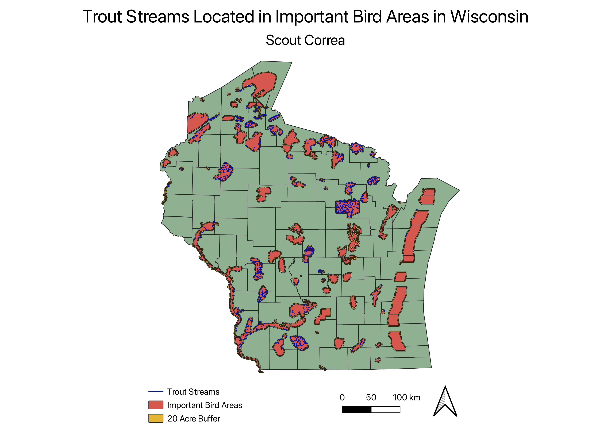

Homework 8

The primary question that could be answered with my map is: which classified trout streams are located within or close to important bird areas in Wisconsin?
I was interested in answering this question because many birds that live within important bird areas are birds of prey. Since one of their primary sources of
food come from trout, I wanted to determine where trout streams intersect with these areas. I chose Wisconsin because I live and grew up there. First, I used buffer() on the important bird areas layer since areas encircling
preservation areas are also important regions to consider. I used a 1280 meter buffer, which is almost equivalent to the width of 20 acres. Then I used union() to combine the original
important bird areas layer with the buffered layer. With the unified layer, I used intersect() to select the trout streams that were located within the bird areas and the
buffer.
Trout Streams Data Source
Bird Areas Data Source